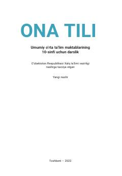

OT10-sinf o'quvchilari uchun mo'ljallangan ona tili fani darsligi.
Ushbu darslik umumiy o'rta ta'lim maktablarining 10-sinf o'quvchilari uchun mo'ljallangan bo'lib, ona tili fanidan chuqurlashtirilgan bilim va ko'nikmalarni beradi. Kitobda nutqiy mavzular, lingvistik tahlillar, uslubiyat va imlo qoidalari hayotiy misollar orqali tushuntirilgan.